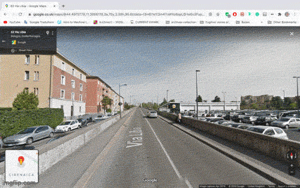
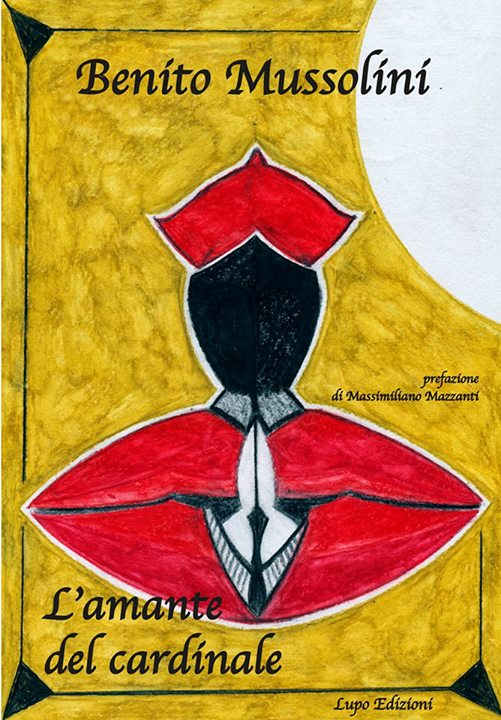

DVX -> link utili
- Della Guerriglia Odonomastica --> Dalle note:
Line of inquiry: the presence of fascist ideology in the italian public space
Cities as a sort of open archive through odonomastics: the streets are mainly named after events, public figures and moments of national history. The selection and the evolution of these names is never neutral and always political.
BLM // statues removal // question: can odonomastics be used as a starting point to visualize the cultural stratification of a country? The public space can be used as a metaphor of the overlaying of different, sometimes opposite ideologies in the history of a place, as well as a representation of the more or less problematic cohabitation of such. 
- www.adamoli.org --> Ho trovato questo sito cercando scritti originali di Benito Mussolini. Su Google mi è apparso come primo risultato. Qui sono presenti discorsi, libri e articoli del Duce catalogati in ordine alfabetico o cronologico, dal 1914 al 1939. Curiosità di questo sito: è possibile accedere all'opera omnia di Mussolini soltanto digitando le parole chiave o l'indirizzo completo, mentre è impossibile accedervi dalla homepage, essendo rimossa dalla mappa del sito. Principalmente, adamoli.org è un archivio di famiglia.
Considerata la mole smisurata di documenti presenti nella sezione "Benito Mussolini", la cosa mi ha ovviamente incuriosito. Questo sito è stata la mia fonte principale per avvicinarmi al linguaggio e alla voce di Mussolini, e da qui nell'arco di due mesi ho consultato più di 400 documenti fra libri, articoli e discorsi.
- www.bibliotecafascista.blogspot.com --> In questa biblioteca fascista sono presenti scritti originali e traduzioni in inglese di Benito Mussolini, articoli e saggi sul fascismo più o meno recenti. Qui ho letto i documenti successivi al 1939, ovvero dell'ultima fase della vita di Mussolini. Alcuni pezzi mi sono rimasti particolarmente impressi, e li ho salvati qui.
- Sontag on Syderberg's "Hitler: A Film From Germany" --> Benjamin suggests that melancholy is the origin of true—that is, just— historical understanding. The true understanding of history, he said in the last text he wrote, is “a process of empathy whose origin is indolence of the heart, acedia.”
- Ultima intervista a Mussolini --> Ho letto e riletto più volte questa intervista. È intensa e ricca di elementi narrativi, ma non ho mai trovato riscontro su fonti ufficiali.
- Mussolini: storia di un letterato (mancato) --> Un altro articolo che condivido con tenerezza. Qui ho scoperto che Mussolini a suo tempo pubblicò un libro chiamato "l'amante del cardinale", un libro romantico, di pessima fattura, di cui si vergognerà a vita.

- Mussolini buonanima --> In ordine di tempo l'ultimo, in ordine di importanza sicuramente il primo. Ho letto questo mini-saggio verso l'inizio della primavera, e ha cambiato completamente il mio approccio al progetto. L'enfasi di questo scritto è sul corpo di Mussolini, la sua gestualità, le sue parvenze, la sua immagine. Mi ha colpito l'ipotesi che Mussolini non fosse altro che una creatura assemblata da altri, dalle masse, dai letterati, dagli industriali, dalle forze politiche, dai media del tempo.